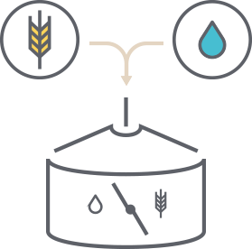
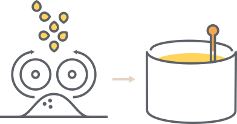
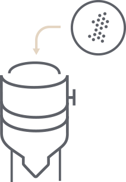

Estudio técnico
Proceso de fabricación de la cerveza
El proceso de fabricación se puede definir en seis grandes fases:
-
Malteado: Los granos de cereal, normalmente de trigo o cebada, se sumergen en agua para que comiencen a germinar y secarse con aire caliente poco después. Dependiendo del grado de tostado conseguiremos maltas más claras u oscuras, que aportarán el color de la cerveza. Las etapas del malteado son:
- Selección del grano: se seleccionan granos con textura homogéneas.
- Remojado del grano: se pone a remojar el grano en diferentes ciclos con el fin de reblandecer e hinchar el grano gracias a la absorción del agua.
- Germinado: En el momento precisamente anterior de la aparición de un diminuto brote verde (plúmula y radícula), la planta emite una enzima que convierte el almidón en azúcar indicando que se debe interrumpir el germinado. Esta etapa dura unos días.
- Secado del grano: se realiza con el fin de eliminar el germen. El tiempo de esta etapa varía según la receta.
Imagen 1. Malteado [1] -
Molienda y maceración: El cereal se tamiza, muele y mezcla con agua a temperatura adecuada hasta formar una pasta consistente. En paralelo se calienta una mezcla ligera de malta a 55°C con el fin de activar las enzimas, luego se sube hasta 90°C para ser mezclada con la pasta. La mezcla resultante se somete a diferentes etapas de temperatura con el fin de extraer el azúcar del grano y obtener así un mosto dulce. El agua es el ingrediente mayoritario con más de un 90% del producto, por lo que la duración y temperatura durante el proceso influirá bastante en el tipo de cerveza final y su consumo placentero. El filtrado (‘Primera Filtración’) es necesaria para eliminar las partículas en suspensión con el fin de obtener un mosto limpio que no estropee el proceso de fermentación. Las partículas en suspensión resultantes están compuestas básicamente por malta remojada con forma de masa espesa (‘afrecho’).
Imagen 2. Molienda y maceración [2] -
Cocción:El mosto se pone a hervir con el objetivo de eliminar las bacterias que hayan podido aparecer durante el proceso, y es justo en este momento cuando se añade el lúpulo, ingrediente que aportará el aroma y amargor deseado. La duración del proceso de cocción depende de cada receta, pero se suele prolongar algunas horas.
Imagen 3. Cocción [3] -
Fermentación:El resultado de la cocción, luego de ser enfriado a una temperatura entre 15°C y 20°C, se pasa al fermentador, donde se añade la levadura y aire para que comience el proceso de fermentación, que puede tardar entre 5 y 10 días. Sus enzimas transforman los azúcares de mosto en alcohol y marcan el perfil de la cerveza. Si la fermentación se produce a alta temperatura (18-25°C), dará como resultado una cerveza de tipo Ale o de 'alta fermentación’, mientras que, si se produce a baja temperatura (6-10°C), obtendremos una cerveza de tipo Lager o 'baja fermentación'.
Imagen 4. Fermentación [4] -
Maduración: El líquido resultante se mantiene un tiempo en un tanque de maduración, donde reposa en frío para que el sabor y los aromas logrados durante el proceso se estabilicen y el producto final mantenga el carácter deseado.
Imagen 5. Maduración [5] -
Embotellado: La cerveza ya está lista. Se envasa en diferentes formatos para su consumo y distribución.
Imagen 6. Embotellado [6]
Ingredientes básicos de la cerveza
- Malta
- Agua
- Lúpulo
- Levadura
- Grits
- Azúcar
Equipos usados
- Silos de almacenamiento
- Cocedor de adjuntos
- Macerador
- Filtro Lauter
- Olla de Cocción
- Tanque de sedimentación Whirlpool
- Intercambiador de calor
- Tanque de maduración
- Silo de Fermentación
- Embotelladora
- Bombas